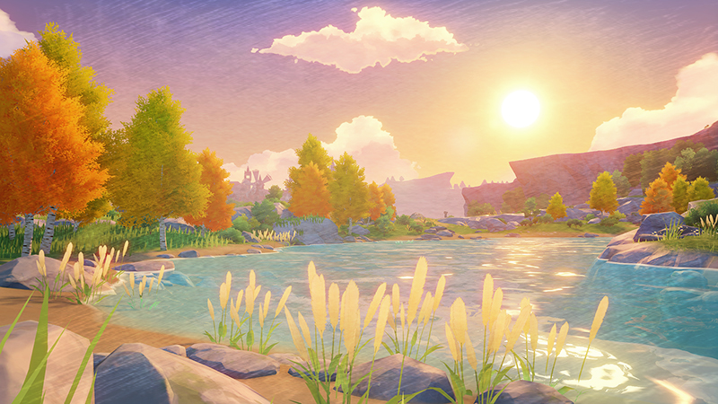
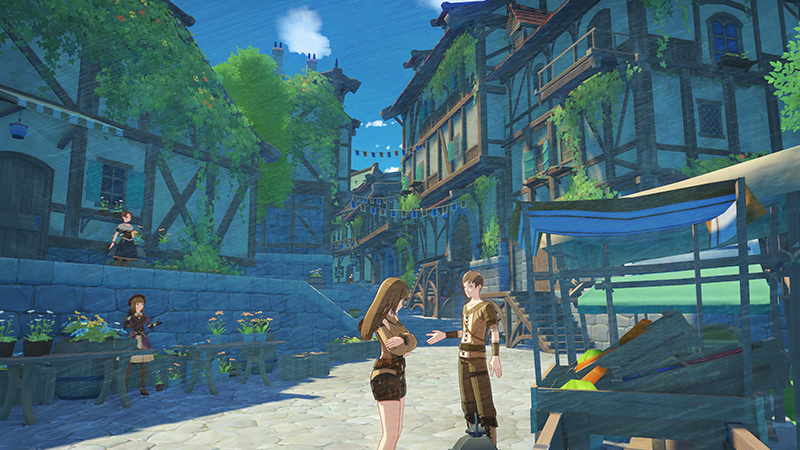
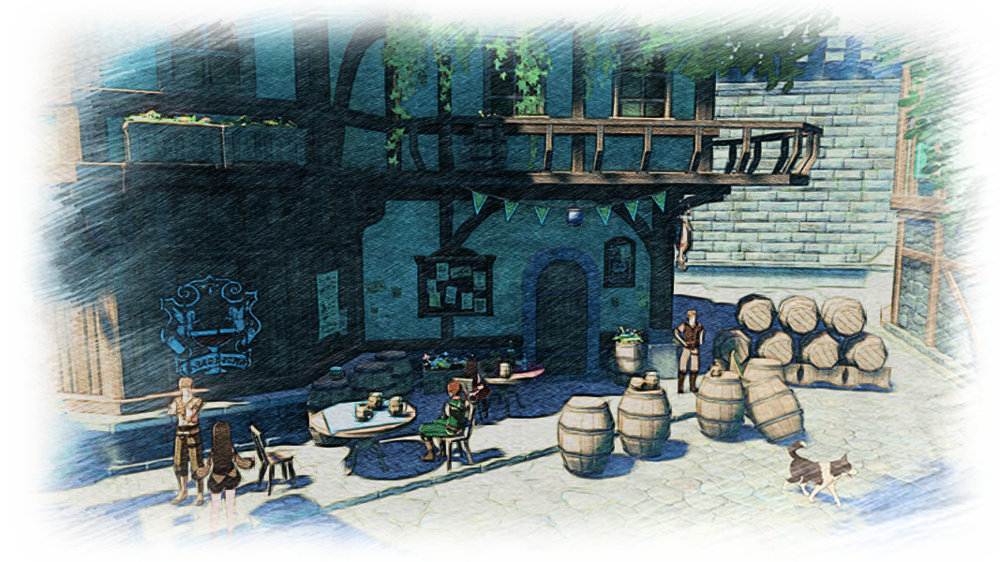
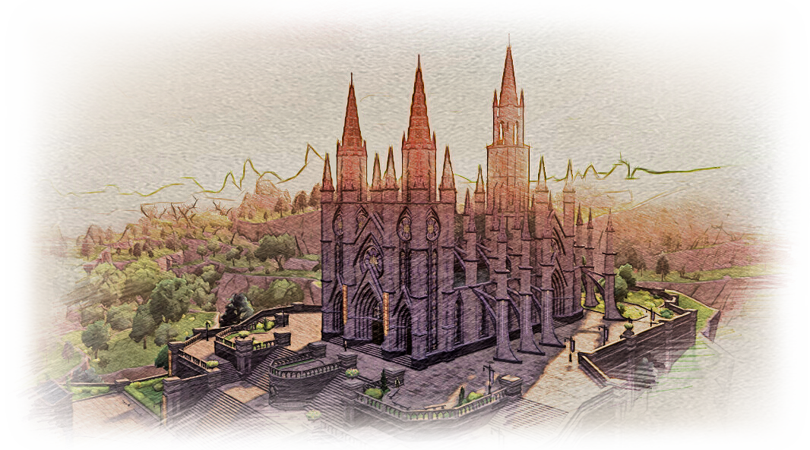

Первый раз в Мондштадте
Город Свободы, Город Романтики, Корона Севера – так художники и барды называют знаменитый город Мондштадт.
Будучи бардом, я бесконечно предан поэзии, музыке, вину и празднествам. Они питают меня, в прямом и переносном смысле. Поэтому меня, как и любого барда, тянет к Мондштадту, как мотылька на пламя.
Однако, совсем недавно, моё внимание привлекли слухи о драконе, которого видели у стен Мондштадта. Может, любопытство одолело меня, а может, в моих жилах течёт кровь искателя приключений, но я твёрдо решил отправиться в Город Свободы, о котором так долго мечтал.

Я отказался от пути по морю, ибо предпочитаю в качестве компании переменчивый пейзаж, нежели бесконечную синеву. Дорога через Вольфендом заняла больше времени, чем планировалось, однако четыре недели назад я наконец достиг границ Шепчущего Леса вблизи Мондштадта. Как имя и предполагает, звук ветра, ласкающего листву, был подобен шёпоту леса. Возможно, это эхо легендарного барда, Анемо Архонта Барбатоса, которому поклоняются жители Мондштадта. Кто знает?
Близится лето, и тёплый климат региона становится всё более очевидным. Залитая весенним солнцем Долина Звездопадов блещет жизнью. Вдоль дорог и тропинок рассыпана цветущая флора - Трава Светяшка и Цветок Сахарок.
По пути часто встречаются представители Гильдии Приключенцев. Наверняка их сюда также привели слухи о драконе. Благодаря им, моё путешествие было безопасным.
Виды долины захватывают дух. Мой первый опыт установки лагеря в дикой местности тоже вылился в приключение, однако довольно короткое, ибо я достиг ворот Мондштадта уже на следующий день.
Чистые воды Сидрового Озера текут в город по древним ирригационным каналам, встречаясь в большом фонтане на центральной площади.

Каменные ступени ведут к возвышающемуся над городом собору. Вокруг него царит неземная безмятежность, так не похожая на шумную рыночную площадь всего в нескольких кварталах от него.
Мондштадтский собор монументальнее и величественнее, чем все другие соборы, которые я видел. Непрекращающиеся молитвы сестёр и горожан придают собору то самое ощущение священного места. Этот собор пропитан духом города. Согласно легенде, в залах собора хранится святая лира Der Himmel, с помощью которой Барбатос много веков назад освободил Мондштадт.

Я слышал истории о легендарном Анемо Архонте и его любимой лире во многих тавернах по всему континенту, ибо они – второй дом для бардов и музыкантов. История такова: в далёком прошлом Мондштадтом правили Аристократы, которые периодически жертвовали рабов дракону для поддержания негласного мирного договора. Веннесса, одна из рабов, победила дракона с помощью самого Анемо Архонта, принявшего облик барда. Вместе они освободили и восстановили город.
Я должен признать, что Мондштадт на самом деле является свободным и открытым городом. Сей факт отражается в его культуре и людях. Как-то раз я спросил дорогу у одной молодой девушки на улице. Как только она узнала, что я странствующий бард, она тут же любезно согласилась показать мне рынок.

Не хочу никого обидеть, но если честно, то эта юная леди, утверждающая, что является членом Ордо Фавониус, смогла утомить даже такого барда, как я. Её подробная экскурсия по городу закончилась только в полночь. У меня нет времени записать в блокнот, как выглядит ночной город, потому что зов постели не в силах сдержать даже молитвы собора.
Спокойной ночи. Пусть Анемо Архонт, защитник Мондштадта, будет моей музой и подарит мне замечательные рифмы по утру.
Памятка:
- Палки для ходьбы (Говорят, горы Мондштадта столь прекрасны, сколь и опасны. Эти палки помогут сохранить равновесие и, при необходимости, послужить оружием)
- Карта и компас (Хоть мы, барды, и поём звёздному небу Мондштадта, но большинство из нас не владеет навыком ориентирования по звёздам. И я тоже)
- Аптечка
- «Рецепты Путешественника по Диким Местам Тейвата» Автор: Инструктор по выживанию Линн. (Книга рецептов. Бестселлер, который есть у каждого путешественника и приключенца)
- Провизия, вода, посуда (Вокруг нас хоть и много еды и воды, но без провизии на экстренный случай никак нельзя. Лучше перестраховаться)
- Блокноты и перья (Всегда под рукой, чтобы ответить на зов музы)
- Палатка и спальный мешок (Рекомендовано Гильдией Приключенцев)
- Кремень и карманный нож (Для разведения огня и защиты от диких животных)
- «Избранные труды Барда Алана»
- Всемогущая валюта Мора
Луди Гарпастум
Для свободолюбивых бардов пункт назначения не столь важен, мы стараемся наслаждаться самим путешествием. Я тоже так считал, пока моим пунктом назначения не стал Мондштадт.
Сегодня мой десятый день в городе. (Изначально я планировал задержаться здесь всего на пару дней).
Дело в том, что Мондштадт выглядит в точности так, как его описывал великий бард Алан. Вдохновлённый его стихами, я бродил по улицам города, проникая в его тайны и секреты, которые разбросаны по всему городу. Но если быть до конца честным, то я остался в Мондштадте, чтобы попасть на ежегодный праздник Луди Гарпастум. Такое нельзя пропускать!

Как-то раз я подслушал разговор пьяного торговца о том, что Мондштадт появился на месте деревушки, которую благословил архонт ветра Барботос. Принесённое ветром перо стало символом свободы. С тех пор жители чествуют Баработоса на празднике Луди Гарпастум. Сейчас Луди Гарпастум — это 15 дней поэзии, вина и музыки. Время, когда город поистине счастлив и свободен.
Я застал жителей в процессе подготовки к празднику.
Гостиницы и рестораны привлекают гостей своими лучшими угощениями, а винокурня «Рассвет» непрестанно поставляет в город бочки вина и крафтового пива. (Поверьте мне, мондштадтское вино ни с чем не сравнится) Улицы наполнены манящим ароматом свежих фруктов, терпких сыров и жареного мяса. Перед каждым домом весит свой маленький гарпастум, который заставляет бардов со всего континента отложить все дела и воспеть великий праздник радости и свободы.
Я уверен, что люди в наши дни совсем забыли о первоначальном сакральном аспекте праздника Луди Гарпастум. Они воспринимают его как простой шум и веселье, каким является любой другой праздник. Однако для нас, бардов тонкой душевной натуры, Луди Гарпастум – определённо лучший фестиваль на полном волшебства континенте Тейват. Даже будучи чужаком в Мондштадте, во время праздника я могу наслаждаться чувством свободы и независимости, которые присущи только этому городу.
На мой взгляд, обычаи и образ жизни в Мондштадте более открыты, чем в любом другом месте Тейвата, и это проявляется во время захватывающих празднеств Луди Гарпастум, которые длятся всю ночь.
В последние дни фестиваля я присутствовал на чемпионате по полётам среди весёлой толпы на площади рядом с собором. Там я сразу узнал девушку, которая в первый день показывала мне Мондштадт. Я вспомнил, как она с гордостью рассказывала, что является чемпионом по полётам. Однако я не был уверен, что она говорит правду. Теперь же, когда я собственными глазами увидел, как она скользит по небу, словно красная комета, мне не остаётся ничего другого, кроме как признать, что Барбатос благословил свой народ духом свободы, мужества, воли и жизнелюбия. Все эти вещи глубоко укоренились в их сознании.
Без сомнений, мне нужно было извиниться перед великим архонтом ветра за то, что я сомневался в его детях. После чемпионата я тихонько повесил стихотворение для молодой девушки в красном на самом видном колоколе на площади, в надежде, что чемпион по полётам сможет отыскать мои извинения и наилучшие пожелания, которые я, увы, не смог сказать ей лично.

Даже посреди ночи нет ничего необычного в том, чтобы видеть в окно освящённый огнями рынок и слышать шум бессонного города. Когда-нибудь я стану слишком стар для путешествий. Когда это время настанет, я хотел бы поселиться в маленьком доме, который построю где-нибудь на солнечной поляне около Мондштадта. Когда люди будут стучаться в мою дверь и угощать пивом из «Доли Ангела», я буду приветствовать их своими лучшими стихами.